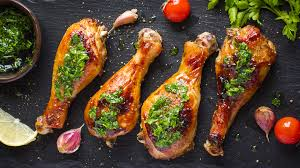

Pesto Chicken

Description
This simple yet delicious dish requires little effort but provides heaps of flavour!
Ingredients
For this recipe you will need the following:
- 400 grams of chicken drumsticks
- a pack of fresh pesto from LIDL
- Optional: some garlic, cherry tomatoes and lime to be served on the side
Steps
In order to get your hands on this feast, follow these steps carefully.
- Pre-heat oven to 220℃
- Place chicken drumsticks in a suitable casserole
- When the oven's ready, place the chicken inside the oven on a tray and let it cook for 30 minutes, or until golden brown in colour
- After the chicken is cooked, remove it from the oven and place on a plate of your choosing
- Finish the dish by scooping some fresh pesto on top, and Voilà! you are ready to enjoy!
Return Home